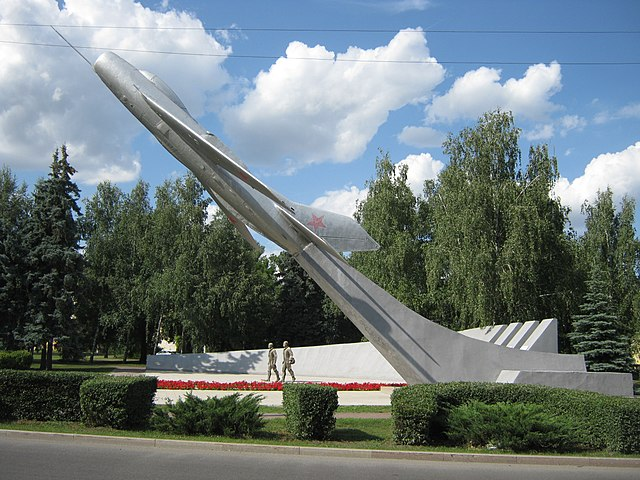

Места нашей области, посвящённые Великой Победе
 Домой
Домой
Площадь Авиаторов (Липецк)
Площадь Авиаторов — крупная площадь в Советском округе Липецка. Расположена на пересечении улицы Гагарина и улицы Космонавтов. Первоначально — в 1968 году — площадь была названа в честь 50-летия ВЛКСМ. В 1969 году на ней установили памятник героям-авиаторам по проекту архитектора Н. Р. Полунина. Памятник представлял собой самолёт, поставленный на высокий постамент. 18 июля 2003 года (к официальному 300-летию Липецка) рядом с ним открыли новый памятник — погибшим лётчикам липецкого авиацентра С. М. Шерстобитову и Л. А. Кривенкову (ск. И. М. Мазур и Ю. Д. Гришко, арх. В. Н. Павлов и Л. А. Павлова). 17 декабря 1968 года они ценой своих жизней увели терпящий бедствие самолёт от жилых кварталов Липецка.
Изображения:
